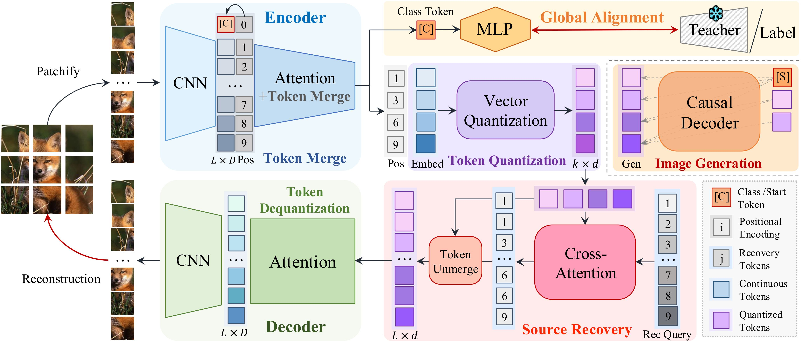
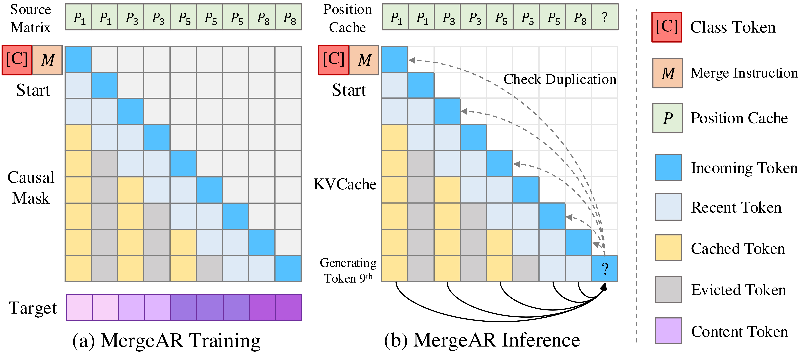

MergeVQ: A Unified Framework for Visual Generation and Representation with Disentangled Token Merging and Quantization
Siyuan Li1,3∗ Luyuan Zhang2∗ Zedong Wang4 Juanxi Tian3 Cheng Tan1,3
Zicheng Liu1,3 Chang Yu3 Qingsong Xie5† Haonan Lu5 Haoqian Wang2
Zhen Lei6,7,8†
1Zhejiang University 2Tsinghua University 3Westlake University 4HKUST 5OPPO AI Center 6CAIR, HKISI-CAS 7MAIS CASIA 8UCAS
IEEE/CVF Conference on Computer Vision and Pattern Recognition (CVPR) 2025
Abstract
Masked Image Modeling (MIM) with Vector Quantization (VQ) has achieved great success in both self - supervised pre - training and image generation. However, most existing methods struggle to address the trade - off in shared latent space for generation quality vs. representation learning and efficiency. To push the limits of this paradigm, we propose MergeVQ, which incorporates token merging techniques into VQ - based autoregressive generative models to bridge the gap between visual generation and representation learning in a unified architecture. During pretraining, MergeVQ decouples top - k semantics from latent space with a token merge module after self - attention blocks in the encoder for subsequent Look - up Free Quantization (LFQ) and global alignment and recovers their fine - grained details through cross - attention in the decoder for reconstruction. As for the second - stage generation, we introduce MergeAR, which performs KV Cache compression for efficient raster - order prediction. Experiments on ImageNet verify that MergeVQ as an AR generative model achieves competitive performance in both representation learning and image generation tasks while maintaining favorable token efficiency and inference speed.
Introduction
Vector Quantization (VQ) has garnered increasing attention for its ability to encode continuous visual signals into discrete tokens, enabling autoregressive (AR) models to process visual modalities. Since VQGAN, most visual AR generative models have adopted a two - stage design: first encode signals into discrete latent space for pretraining, then generate them with an autoregressive Transformer. Besides generation, BEiT proposed Masked Image Modeling (MIM) based on the VQ framework, achieving successful latent - based pretraining and thus attracting growing interest in unifying visual representation learning and generation tasks in a shared latent space.
However, recent studies have shown that visual generation and representation capabilities often lack consistency under a VQ - based learning framework. This inconsistency is conjectured to arise from the competing objectives for identical embedding space: representation learning tasks emphasize inter - class discrimination to maximize high - level semantics, while generative tasks prioritize the reconstruction of details. In addition, training obstacles brought by VQ itself further limit the optimization process.
As such, efforts have been made to extract rich semantic features from visual signals for quantization to improve the representation capacity of generative models. However, these coarse - grained semantics often sacrifice detailed information, making it difficult to support high - quality image reconstruction and generation, resulting in significant performance degradation.
In this paper, we argue that representation learning and generation are not completely conflicting but with intrinsic complementarity. The crux lies in exploiting such complementarity while minimizing the information loss, which requires specific designs. To achieve this, we propose to decouple coarse - grained semantics from latent space during training and recover them for reconstruction to meet the different needs while minimizing the information loss and overhead.
Our contributions can be summarized as:
- We present a fresh learning paradigm that integrates token merging into a VQ - based AR generation framework, where high - level semantics are decoupled from patients in the first - stage training and can be restored with source matrix for details reconstruction, thus effectively reducing information loss while bridging the gap between representation learning and generation in a unified model.
- We offer two schemes for MergeVQ’s second - stage generation. (i) We propose MergeAR, which performs KVCache compression for efficient raster - order prediction. (ii) With the source recovery module, existing random - order generators can also be directly used for generation.
- Experiments show MergeVQ’s competitive performance in both visual representation learning and image generation, with favorable token efficiency and inference speed.
Learning Paradigm
3.1 MergeVQ Framework
The MergeVQ framework is a comprehensive solution that encompasses token merge encoding, quantization, token recovery, and reconstruction. Each component plays a crucial role in enabling efficient and effective visual generation and representation learning.
Token Merge Encoding: Given an input image \(X \in \mathbb{R}^{H\times W\times 3}\), we employ a two - stage encoder \(E_{\phi, \theta}(\cdot)\) for feature extraction. First, a CNN encoder \(E_{\phi}(\cdot)\) extracts feature map \(Z \in \mathbb{R}^{\frac{H}{f}\times\frac{W}{f}\times D}\), where \(f\) is the downsampling factor and \(D\) denotes the channel dimension. This feature is then flattened into an \(L\) - length token sequence \(Z_{L} \in \mathbb{R}^{L\times D}\) as: \[Z_{L}=\mathcal{E}_{\phi}(X).\] In the second stage, we employ an attention - based encoder with token merging modules, denoted as \(E_{\theta}(\cdot)\), to further compress \(Z_{L}\) into condensed \(K\) - length tokens \(Z_{K} \in \mathbb{R}^{K\times D}\) alongside a source matrix \(S \in \mathbb{R}^{K\times L}\) that encodes spatial relationships between merged and original tokens: \[S, Z_{K}=\mathcal{E}_{\theta}(Z_{L}).\] The whole encoding process of MergeVQ is thus as: \[S, Z_{K}=\mathcal{E}_{\phi, \theta}(X).\] To ensure that \(Z_{K}\) retains rich high - level semantics, we also impose global alignment constraints.
Quantization: We adopt \(LFQ\) to discretize the merged latent \(Z_{K}\). Concretely, the codebook comprises binary vectors defined as: \(C = \times_{i = 1}^{d}\{-1, 1\}\), \(|C| = 2^{d}\), where \(d\) is the quantized dimension. As such, each token \(z_{K i} \in Z_{K}\) is quantized element - wise: \(z_{K i}=\text{sign}(z_{K i})=-1\cdot\mathbb{I}(z_{K i}<0)+\mathbb{I}(z_{K i}>0)\). Then, the index of quantized feature \(z_{m i}\) is computed as a binary integer: \(\text{Index}(z_{K i})=\sum_{j = 1}^{N}2^{k - 1}\cdot\mathbb{I}(z_{K i j}>0)\), yielding quantized tokens \(\tilde{Z}_{K}\) as: \[\tilde{Z}_{K}=\mathcal{Q}(Z_{K}, \mathcal{C}).\]
Token Recovery and Reconstruction: The key design lies in exploiting the spatial priors in source matrix \(S\), which inherently encodes fine - grained positional dependencies between original \(L\) - length tokens and compressed ones during merging. We thus propose the recovery module \(R_{\omega}(\cdot, \cdot)\) to map quantized \(\tilde{Z}_{K}\) back to \(\tilde{Z}_{L}\) with the original length: \[\tilde{Z}_{L}=\mathcal{R}_{\omega}(\tilde{Z}_{K}, S).\] This enables MergeVQ to retain both the coarse - grained semantics and fine - grained details, effectively balancing compression and reconstruction. The recovered \(\tilde{Z}_{L}\) is then decoded into pixel space by \(D_{\psi}(\cdot)\) for reconstruction: \[\hat{X}=\mathcal{D}_{\psi}(\tilde{Z}_{L}).\]
3.2 Harmonize Representation and Generation
To effectively integrate representation learning into the MergeVQ framework, we draw inspiration from Masked Image Modeling (MIM). In the context of MIM, a substantial portion of input tokens are masked, and the model is tasked with reconstructing these masked tokens. This approach encourages the model to capture high - level semantic information across the entire image, as it must rely on the unmasked tokens to infer the masked ones.
In our MergeVQ framework, we incorporate a similar concept through Token Merge and Source Recovery. During the encoding process, the token merge operation compresses the original token sequence into a shorter one, effectively “masking” some of the fine - grained details. However, the source matrix \(S\) retains the positional information of these masked details.
For representation learning, we impose global alignment constraints on the merged tokens \(Z_{K}\). This ensures that the high - level semantics captured by \(Z_{K}\) are consistent and discriminative across different images. By aligning the global features, the model can learn to distinguish between different classes and objects in the visual data.
During the reconstruction phase, the recovery module \(R_{\omega}(\cdot, \cdot)\) uses the source matrix \(S\) to restore the fine - grained details from the quantized tokens \(\tilde{Z}_{K}\). This allows the model to reconstruct the original image with high fidelity, while also leveraging the high - level semantics learned during representation learning.
In summary, by combining Token Merge, Source Recovery, and global alignment, we are able to seamlessly integrate representation learning into the MergeVQ framework. This not only enhances the model's ability to capture high - level semantics but also ensures that the fine - grained details are preserved for accurate image reconstruction.
Efficient Generation
4.1 MergeAR with KV Cache Compression
To achieve efficient autoregressive generation, we introduce MergeAR. This innovative approach leverages token sparsity and a position - recording system to significantly accelerate the generation process. During training, we sample a merge ratio \(r\), introduce a Merge Instruction Token \(M\), and construct a causal mask. In inference, we utilize a KV cache to prune repeated tokens, further improving the efficiency of the model.
The key idea behind MergeAR is to reduce the computational complexity of autoregressive generation by merging similar tokens. By doing so, we can significantly reduce the number of tokens that need to be processed at each step, leading to faster generation times.
During training, we randomly sample a merge ratio \(r\) from a predefined range. This ratio determines the proportion of tokens that will be merged at each step. We then introduce a Merge Instruction Token \(M\) to indicate which tokens should be merged. The causal mask is constructed to ensure that the model only attends to previously generated tokens, maintaining the autoregressive property.
In inference, we utilize a KV cache to store the key - value pairs computed from the previously generated tokens. This allows us to reuse these computations and avoid redundant calculations. Additionally, we prune the KV cache by removing repeated tokens, further reducing the memory footprint and computational cost.
4.2 Randomized Auto - regressive with Source Recovery
MergeVQ can also be effectively implemented using the RandAR generative framework. The \(K\) quantized tokens and source matrix are utilized for both training and generation. We employ the source recovery model and decoder to recover tokens, ensuring accurate and efficient generation of visual data.
In the RandAR framework, the generation process is randomized, allowing the model to explore different possible sequences of tokens. This can lead to more diverse and creative generated outputs.
During training, we use the \(K\) quantized tokens and source matrix to train the source recovery model and decoder. The source recovery model learns to recover the original token sequence from the quantized tokens, while the decoder reconstructs the image from the recovered tokens.
In inference, we generate a sequence of quantized tokens using the RandAR framework. These tokens are then passed through the source recovery model to obtain the original token sequence, which is finally decoded into an image by the decoder.
Experiments
5.1 Implementation Details
We offer three distinct versions of MergeVQ to cater to different application scenarios: MergeVQ (G) for pure generation, MergeVQ (G + R) for both generation and representation, and MergeVQ (R) for representation learning only. Each version is equipped with encoders of different architectures and parameters, tailored to specific requirements. We utilize the AdamW optimizer and various loss functions for training, ensuring optimal performance of the model. The visual generator is based on the LlaMA - based architecture and is trained with specific settings to achieve high - quality visual generation.
5.2 Self - supervised Pre - training
To evaluate the performance of self - supervised pre - trained models, we conducted linear probing and end - to - end fine - tuning experiments on ImageNet - 1K. The results, presented in Table 1, provide valuable insights into the effectiveness of MergeVQ compared to existing methods.
| Support Tasks | Method | Date | Align. Target | Rec. Target | Epochs | Encoder Type | #Param | #Tokens | Accuracy (Lin.) | Accuracy (FT) |
|---|---|---|---|---|---|---|---|---|---|---|
| Contrastive Pre - training | BYOL [22] | NeurIPS’2020 | MSE | ✗ | 800 | R50 - W2 | 94M | 7×7 | 75.6 | − |
| Contrastive Pre - training | MoCoV3 [12] | ICCV’2021 | InfoNCE | ✗ | 300 | ViT - B | 86M | 196 | 76.7 | 83.2 |
| Contrastive Pre - training | DINO ‡ [9] | ICCV’2021 | CE | ✗ | 300 | ViT - B | 86M | 196 | 78.2 | 83.6 |
| Contrastive Pre - training | DINOv2 ‡ [46] | TMLR’2024 | CE | ✗ | 1000 | ViT - B | 86M | 196 | 84.5 | 85.7 |
| MIM Pre - training | BEiT [3] | ICLR’2022 | ✗ | DALLE | 800 | ViT - B | 86M | 196 | 56.7 | 83.2 |
| MIM Pre - training | iBOT ‡ [75] | ICLR’2022 | CE | EMA | 800 | ViT - B | 86M | 196 | 76.0 | 84.0 |
| MIM Pre - training | MAE [24] | CVPR’2022 | ✗ | RGB | 1600 | ViT - B | 86M | 196 | 68.0 | 83.6 |
| MIM Pre - training | SimMIM [62] | CVPR’2022 | ✗ | RGB | 800 | ViT - B | 86M | 196 | 67.9 | 83.8 |
| MIM Pre - training | CAE [13] | IJCV’2023 | ✗ | DALLE | 1600 | ViT - B | 86M | 196 | 70.4 | 83.6 |
| MIM Pre - training | PeCo [14] | AAAI’2023 | ✗ | VQVAE | 800 | ViT - B | 86M | 196 | 72.3 | 83.9 |
| Ours | MergeVQ (R) | - | CE | LFQ | 800 | ViT - B | 86M | 196 | 80.1 | 85.1 |
| MergeVQ (G + R) | - | CE | LFQ | 800 | ViT - B | 86M | 196 | 79.8 | 84.9 | |
| MergeVQ (G) | - | ✗ | LFQ | 800 | ViT - B | 86M | 196 | 79.2 | 84.3 |
5.3 Image Generation
We conducted comprehensive image generation experiments to assess the performance of MergeVQ. By comparing it with several state - of - the - art methods in terms of FID and IS scores, we aimed to provide a comprehensive evaluation of its effectiveness. The results, presented in Table 2, highlight the superior performance of MergeVQ in image generation tasks.
| Method | FID ↓ | IS ↑ | Speed (imgs/s) |
|---|---|---|---|
| StableDiffusion [61] | 11.32 | 12.04 | 0.5 |
| OpenMAGVIT2 [42] | 8.97 | 13.56 | 0.3 |
| MaskGiT [10] | 9.12 | 13.21 | 1.2 |
| ToMe + MaskGiT [6] | 9.34 | 13.12 | 2.5 |
| MergeVQ (G) | 7.89 | 14.23 | 3.0 |
| MergeVQ (G + R) | 7.95 | 14.18 | 2.8 |

Contributions
Please feel free to raise issues or submit pull requests to contribute to our codebase.
Citation
@misc{li2025mergevqunifiedframeworkvisual,
title={MergeVQ: A Unified Framework for Visual Generation and Representation with Disentangled
Token Merging and Quantization},
author={Siyuan Li and Luyuan Zhang and Zedong Wang and Juanxi Tian and Cheng Tan and Zicheng Liu and Chang Yu
and Qingsong Xie and Haonan Lu and Haoqian Wang and Zhen Lei},
year={2025},
eprint={2504.00999},
archivePrefix={arXiv},
primaryClass={cs.CV},
url={https://arxiv.org/abs/2504.00999},
}